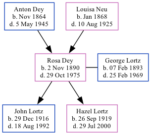

Rosa Johanna Lortz (née Dey) 1890 - 1975
[ Home ] | [ Surnames Index ] | [ Family History ]The child of Anton Dey and Louisa Neu, , Rosa was the great-grandmother of Stephanie Hardesty (née Teten), was born in Gresham, , Nebraska on Nov 2, 18901,2,3,4,5 and married George Lortz (with whom she had 2 children: John Peter and Hazel Mary) in York, , Nebraska on Oct 28, 1914.
During her life, she was living in D Precinct, Seward, Nebraska in 19001; in Precinct D, Seward, Nebraska in 19102; in Gresham, York, Nebraska in 19203; and in Utica, Seward, Nebraska in 19304.
She died on Oct 29, 1975 in Lincoln, Lancaster, Nebraska, USA5.
Parents
- Anton was born in Nov 1864
- Louisa Juliana was born in Jan 1868
Children
- John Peter was born on Dec 29, 1916
- Hazel Mary was born on Sep 26, 1919
Citations
- 1900 United States Federal Census Ancestry.com Operations Inc (Age: 9; Marital Status: Single; Relation to Head of House: Daughter)
- 1910 United States Federal Census Ancestry.com Operations Inc (Age in 1910: 19; Marital Status: Single; Relation to Head of House: Daughter)
- 1920 United States Federal Census Ancestry.com Operations Inc (Age: 29; Marital Status: Married; Relation to Head of House: Wife)
- 1930 United States Federal Census Ancestry.com Operations Inc (Age: 39; Marital Status: Married; Relation to Head of House: Wife)
- Social Security Death Index Ancestry.com Operations Inc
Family Tree
Data (GEDCOM) maintained by Jay Weston Hannah, Omaha, Nebraska, USA.
Website generated by ged2site. Last updated on Jun 18, 2024.